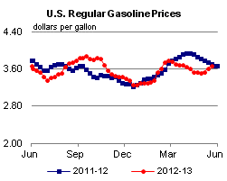
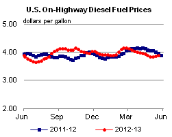
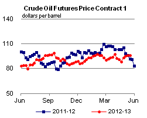
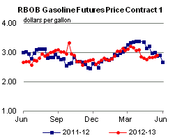
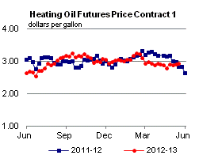
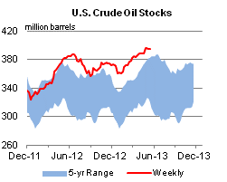
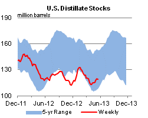
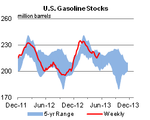
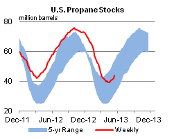

Released: May 23, 2013
Next Release: May 30, 2013
Midwest gasoline prices: some relief in sight
Gasoline prices throughout the Midwest, also known as Petroleum Administration for Defense District (PADD) 2, have been trending sharply higher since mid-April. Both planned and unplanned refinery maintenance have limited gasoline production, and inventories, which were robust going into turnaround season, have been significantly depleted. While resupply from the U.S. Gulf Coast (PADD 3) is available via pipeline, transit time to the upper Midwest can be as long as three weeks.
According to EIA's weekly survey of retail gasoline and diesel fuel prices, the average regular retail gasoline price for PADD 2 rose from 9 cents below the national average price on April 15 to 19 cents above the national average price on May 20. The price increase in Minnesota was particularly pronounced. The average retail regular gasoline price in Minnesota increased a total of 81 cents between April 15 and May 20, including an increase of 44 cents between May 13 and May 20. At $4.29 per gallon on May 20, the average retail regular price in Minnesota was the highest in the continental United States, 62 cents above the national average. At the same time, price increases have spread westward to North Dakota and other parts of the upper Midwest.
Higher gasoline prices in the Midwest largely reflect supply constraints stemming from decreased refinery runs and lower-than-normal gasoline inventories. Refinery utilization in the Midwest has fallen steadily since the start of 2013, and is now about 83 percent of capacity, below the U.S. average of 87 percent. As of May 17, Midwestern gross refinery inputs were averaging 279,000 barrels per day (bbl/d) lower than at the start of the year (Figure 1). The reduction in runs reflects a combination of routine seasonal turnaround and maintenance activity, unplanned outages, and longer-term upgrading initiatives.
{kind=link}
For example, according to trade press, planned maintenance efforts at the ExxonMobil Joliet, Illinois (239,000 bbl/d) and Marathon Catlettsburg, Kentucky (233,000 bbl/d) refineries reduced runs in the Midwest. Unplanned outages, including those at Holly Frontier's El Dorado, Kansas refinery (138,000 bbl/d) and Flint Hills' St. Paul, Minnesota refinery (277,000 bbl/d), further stressed the system. Longer-term projects already underway magnified the impact of the planned and unplanned outages. BP's Whiting, Indiana refinery (337,000 bbl/d), for example, has had 260,000 bbl/d offline since November as coking capacity is installed to increase its ability to run heavy crude. Northern Tier's St. Paul, Minnesota refinery (74,000 bbl/d) was reported to have been shut down in April to undergo a planned expansion.
Gasoline inventories tend to increase in January through March, in anticipation of reduced refinery production during turnaround season (Figure 2). As refinery runs decrease, inventories are used to meet demand. PADD 2 gasoline inventories began April near the top of the five-year range but are now at the bottom of the range, having fallen 6 million barrels since April 12. The combination of lower production from PADD 2 refineries and reduced inventories put upward pressure on prices.
{kind=link}
In Minnesota and North Dakota, which have experienced the largest price increases, markets are primarily supplied by the three refineries in those states: Flint Hills St. Paul, Minnesota, Northern Tier St. Paul, Minnesota and Tesoro West Coast Mandan, North Dakota (60,000 bbl/d). Additional supplies arrive via pipeline from refineries in other parts of the Midwest and the Gulf Coast, and to a lesser extent from refineries located in Montana. However, given the distance these additional barrels must travel, resupply can take weeks.
Trade press reports over the past several days indicate that supply constraints may be easing. Northern Tier is said to have recently resumed normal operations and the ExxonMobil Joliet refinery near Chicago is expected to restart soon. In addition, it has been reported that supplies shipped on the Explorer Pipeline from the Gulf Coast have begun to reach the market. Lastly, BP's Whiting refinery could begin operating its upgraded crude distillation unit by the end of May or early June.
Gasoline and diesel fuel prices increase again
The U.S. average retail price of regular gasoline increased seven cents for the second consecutive week, to $3.67 per gallon as of May 20, 2013, down four cents from last year at this time. The largest increase came in the Midwest, where the price increased 19 cents to $3.87 per gallon. The Rocky Mountain price rose 11 cents to $3.67 per gallon. The Gulf Coast price is now $3.39 per gallon, an increase of three cents. On the West Coast, the price is up a penny to $3.95 per gallon. Rounding out the regions, the East Coast price increased one cent to $3.49 per gallon.
The national average diesel fuel price increased two cents for the second consecutive week, to $3.89 per gallon, seven cents lower than last year at this time. The Gulf and West Coast prices both increased four cents, to $3.78 per gallon and $4.01 per gallon, respectively. The Midwest and Rocky Mountain prices are both up three cents, to $3.93 per gallon and $3.85 per gallon, respectively. Rounding out the regions, the East Coast price is $3.87 per gallon, up a penny from last week.
Propane inventories gain
Total U.S. inventories of propane increased 2.2 million barrels last week to end at 44.0 million barrels, but are 10.0 million barrels (18.6 percent) lower than the same period a year ago. The Midwest and Gulf Coast regions led the gain by rising 1.0 million barrels each, while Rocky Mountain/West Coast and East Coast inventories each increased by just 0.1 million barrels. Propylene non-fuel-use inventories represented 7.9 percent of total propane inventories.
Text from the previous editions of This Week In Petroleum is accessible through a link at the top right-hand corner of this page.
|  |  | ||||||
| Retail Data | Change From Last | Retail Data | Change From Last | ||||
| 05/20/13 | Week | Year | 05/20/13 | Week | Year | ||
| Gasoline | 3.673 | Diesel Fuel | 3.890 | ||||
|  |  | ||||||||||||||||||||||||||
|
 | ||||||||||||||||||||||||||
| *Note: Crude Oil Price in Dollars per Barrel. | |||||||||||||||||||||||||||
|  |  | ||||||
|  |  | ||||||
| Stocks Data | Change From Last | Stocks Data | Change From Last | ||||
| 05/17/13 | Week | Year | 05/17/13 | Week | Year | ||
| Crude Oil | 394.6 | Distillate | 118.8 | ||||
| Gasoline | 220.7 | Propane | 43.974 | ||||